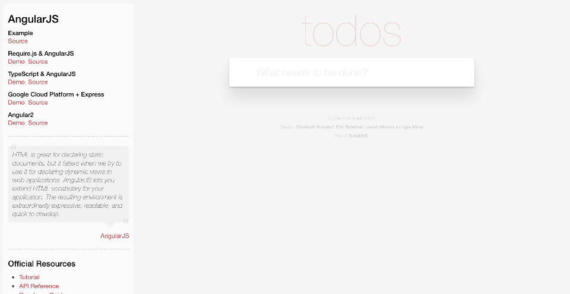

Demo Project using Serenity and Cucumber
Home
>
Filtering My Todo List
>
View only
completed
items #123
> Screenshots
Overall Test Results
Requirements
Capabilities
Features
Report generated 24-11-2016 12:43
Filtering My Todo List
Feature
In order to make me feel
a sense of accomplishment
As a forgetful person I want to be to view all of things I have completed
Cucumber (tag)
Staying Focused (capability)
View Only
Completed
Items
#123
(
#123
)
